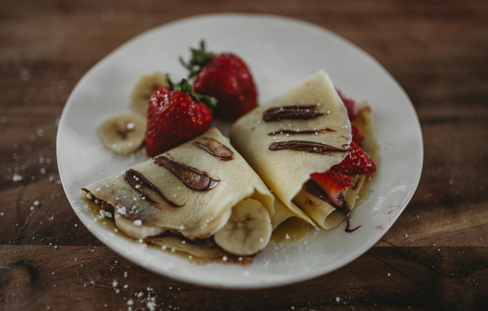

Aquí nosotros tenemos una receta muy sencillo, muy sabros, y muy facil. Adelante para aprender mas
EN una lliquadora, agrega la leche, los huevos, azucar, y chucharitasa de mantequilla fundirse.
In a pan, place the suace over a skillet until coveres. Cook on onse side then flip until golden brown. You can also make the crepes and add paper towels between them to store it in the freezer. Va a la casa